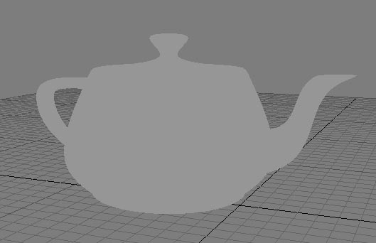
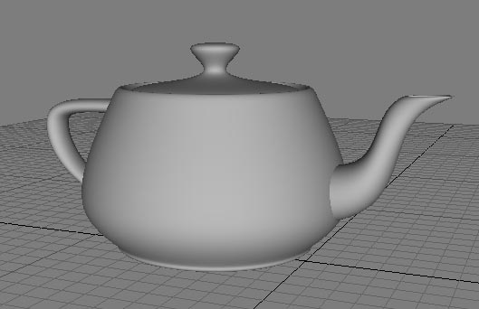

L'ombrage de Gouraud
Pour représenter un objet 3D à l'écran, un ordinateur calcule la position des sommets qui le composent dans le repère de la caméra et effectue une projection conique afin d'obtenir leurs coordonnées 2D sur l'écran. Ensuite il remplit les triangles qui relient ces sommets. Pour cela, il prendra en compte les propriétés de couleur de l'objet (couleur diffuse ou texture appliquée sur l'objet). Cependant, le rendu de l'objet sera très plat.
Exemple, une théière de couleur uniforme grise. Tous les points ont la même couleur, il n'y a aucun effet de 3D.

En ajoutant un ombrage, les volumes apparaissent tout de suite.

L'ombrage de Gouraud est une technique d'illumination locale, qui se base sur la lumière incidente. Une source de lumière est définie (Dans le cas de MSTS, c'est tout simplement le soleil), l'angle entre la lumière et la normale de chaque vertex permet de calculer le taux de lumière réfléchie en chaque point de l'objet. Ce taux va pondérer la couleur de base de la théière. Le gris uniforme sera alors plus foncé là où lumière a un angle d'incidence faible.
Contrairement à ce que son nom laisse penser, l'ombrage ne permet pas de calculer des ombres portées d'un objet vers un autre.
Comment fonctionne l'ombrage de Gouraud
L'idée de moduler la couleur d'un polygone en fonction de l'angle de la lumière incidente ne date pas de Gouraud. On parle d'ailleurs de modèle de Lambert. A l'heure des tous premiers systèmes de représentations 3D dans les années 70, les capacités de calculs étaient très limitées et cette méthode présente l'intérêt de reposer sur un simple produit scalaire entre deux vecteurs 3D. Le premier modèle d'ombrage réalisait cependant ce calcul au niveau du triangle et tous les pixels d'un triangle avaient la même couleur. On parle de "Flat shading" (ombrage plat) et les différences de couleurs entre des triangles accolés mais non coplanaires n'étaient pas très agréables à voir, en raison de l'accentuation du constraste que le cerveau humain réalise automatiquement (voir Bandes de Mach).
L'idée d'Henri Gouraud est alors de calculer l'illumination, non pas au niveau du triangle, mais de chaque vertex. Puis d'interpoler linéairement les valeurs obtenues sur chaque pixel lors du remplissage. La différence de teintes s'estompe le long d'une arête si les triangles accolés utilisent les mêmes normales sur leurs vertices en commun. On parle alors de "Smooth shading" (ombrage lissé).
Le Smooth shading prendra plus tard le nom de Gouraud pour le distinguer d'autres techniques plus avancées telles que le modèle d'illumination de Phong (voir ombrage de Bui Tuong Phong).
L'ombrage de Gouraud devint très populaire en raison de la simplicité et donc de la rapidité des calculs à réaliser. Ils s'intégrent dans le placage linéaire des textures. En 3D temps réel, la recherche de performance a longtemps privilégié ce modèle sur tous les autres, trop coûteux. 30 ans après, DirectX 9 ne proposait toujours que le flat shading et l'ombrage de Gouraud par défaut. Il aura fallu attendre les Pixel shaders et les cartes vidéos modernes pour permettre de passer à des modèles plus évolués (Phong, Blinn...) grâce au per-pixel shading. L'illumination n'étant plus calculée sur les vertices mais sur chaque pixel.
L'inconvénient principal de l'ombrage de Gouraud est qu'il n'est efficace que pour représenter la lumière diffuse. La lumière spéculaire, dont les reflets sont plus localisés n'est pas bien rendue. Les techniques plus modernes de Bump mapping à l'aide de cartes de normales (Normal map) font également préférer le per-pixel shading. Les logiciels d'images de synthèse précalculées utilisent désormais des techniques d'illumination globale, bien trop coûteuses en temps de calcul pour le jeu vidéo, qui s'approchent davantage du comportement physique des photons (Photonique, Radiosité).
L'ombrage de Gouraud expliqué par Gouraud
Le 23 juin 2011, la conférence "Le Futur a un Passé" se tenait à l'École nationale supérieure des Arts Décoratifs.
Parmi les invités, Henri Gouraud raconte, non sans humour, comment il a atterri dans l'université d'Utah
au milieu des pionniers de l'image de synthèse et a inventé sa technique. Une toute bête interpolation linéaire dont il n'imaginait pas la portée.
Henri Gouraud : La baguette magique qui cache la facette